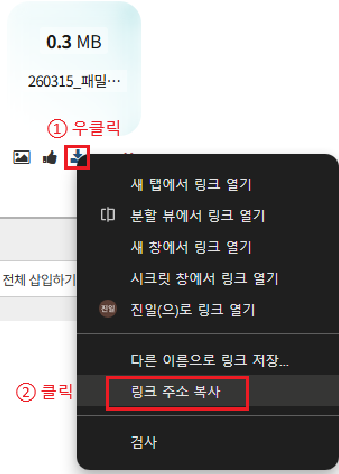

신승 성경 본문 HTML 생성기 2.0
말씀 MP3 링크, 패밀리모임지 링크, 성경 본문을 입력하면 게시용 HTML을 생성합니다.
v2.0
입력 (2.0 작업본)
(선택)
패밀리모임지 링크 복사 방법
1. 다운로드 버튼을 클릭합니다.
2. 링크 주소 복사를 선택합니다.
1. 다운로드 버튼을 클릭합니다.
2. 링크 주소 복사를 선택합니다.

직접 붙여넣어도 되고, 아래 선택창으로 개역개정 본문을 자동으로 불러올 수도 있습니다.